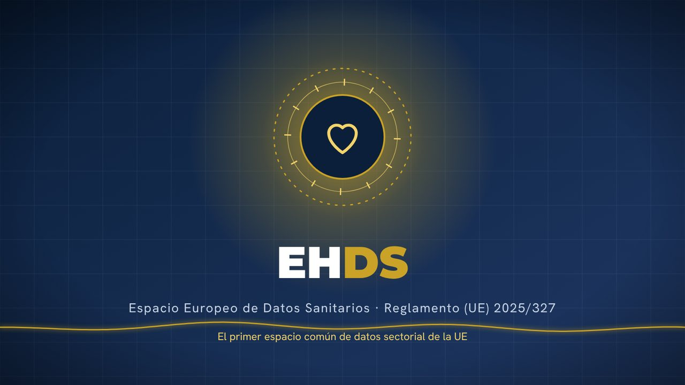

ARG
ARGARGOS › Normativa en 4 minutos › EHDS
El EHDS en 4 minutos: qué cambia el Espacio Europeo de Datos Sanitarios para hospitales y empresas de salud
El Reglamento (UE) 2025/327 crea el primer espacio común de datos sectorial de la Unión: da a cada persona acceso y control sobre sus datos de salud en toda Europa y obliga a los sistemas de historia clínica a ser interoperables. Se aplica con carácter general desde el 26 de marzo de 2027.

- 0:00Urgencias
- 0:15La norma
- 0:42Qué cambia
- 1:06EHDS
- 1:16Cómo funciona
- 1:52Datos prioritarios
- 2:11Calendario
- 2:32Derechos
- 2:49En España
- 3:14Qué hacer
Datos clave
- 105 artículos, en vigor desde marzo de 2025.
- 26 de marzo de 2027: aplicación general.
- 2029: primer grupo de datos en todos los Estados y arranque del uso secundario. 2031: segundo grupo. 2035: últimas fases.
- Hasta 20 millones de euros o el 4 % de la facturación por incumplir las reglas de reutilización.
- Los sistemas de historia clínica pasan a ser un producto con autoevaluación y marcado CE.
- Datos prioritarios: historia resumida, receta y dispensación electrónicas; después, imágenes, laboratorio e informes de alta.
- Uso secundario solo con permiso de un organismo de acceso, en entornos de tratamiento seguro y con datos anonimizados por defecto.
- En España, el Espacio Nacional de Datos de Salud funciona como red federada con más de 330 conjuntos de datos en su catálogo.
Transcripción
Texto completo de la locución
0:00 · Urgencias
Una paciente llega a urgencias en Lisboa. Su historial está en Madrid. Sus pruebas en otro sistema. Su medicación en papel. Y el médico decide a ciegas.
0:15 · La norma
El espacio europeo de datos sanitarios quiere acabar con eso. Es un reglamento europeo de 105 artículos, en vigor desde marzo de 2025. Da a cada persona acceso y control sobre sus datos de salud en toda Europa, y obliga a los sistemas de historia clínica a ser interoperables. Y las multas por incumplir las reglas de reutilización llegan a 20 millones de euros, o al 4% de la facturación.
0:42 · Qué cambia
Para hospitales, fabricantes y empresas de salud cambia mucho. El paciente podrá ver sus datos al instante, y saber quién ha accedido. Los sistemas de historia clínica serán un producto con marcado CE. Habrá que intercambiar datos en un formato europeo común. Los datos se podrán reutilizar, pero solo con permiso. Y cada acceso deberá quedar registrado.
1:06 · EHDS
El EHDS es el primer espacio común de datos sectorial de la Unión Europea. Del dato clínico encerrado, a un dato que viaja con el paciente.
1:16 · Cómo funciona
Funciona en varios planos. Uso primario. El paciente accede a sus datos, los completa, los restringe y los comparte, también en otro país. Producto regulado. Interoperabilidad y registro de accesos, con autoevaluación y marcado CE. Uso secundario. Los organismos de acceso conceden permisos para investigación, innovación e inteligencia artificial. Siempre en entornos de tratamiento seguro, con datos anonimizados por defecto. Y nunca para discriminar, excluir de un seguro o reidentificar a nadie.
1:52 · Datos prioritarios
Los datos prioritarios llegan en dos grupos. Primero, la historia resumida del paciente y la receta y la dispensación electrónicas. Después, las imágenes médicas y los resultados de laboratorio y los informes de alta. Todo en el formato europeo de intercambio de historiales médicos.
2:11 · Calendario
El calendario es largo, pero ya ha empezado. 26 de marzo de 2027. Aplicación general. 2029. El primer grupo de datos en todos los Estados y el arranque del uso secundario. 2031. El segundo grupo. Y 2035. Las últimas fases.
2:32 · Derechos
El paciente gana derechos. Acceso inmediato y gratuito. Añadir información y pedir la rectificación. Llevar sus datos a otro profesional, también en otro estado. Restringir quién ve qué. Y saber quién ha accedido y cuándo.
2:49 · En España
En España, el Espacio Nacional de Datos de Salud ya funciona como una red federada, con más de 330 conjuntos de datos en su catálogo. La Oficina del Dato del Sistema Nacional de Salud actúa como organismo de acceso coordinador. Las comunidades autónomas serían las autoridades regionales de salud digital. Y la futura ley de salud digital, todavía en anteproyecto, completará el modelo.
3:14 · Qué hacer
¿Qué hacer ahora? Inventariar los sistemas que tratan datos prioritarios. Preparar la interoperabilidad y el registro de accesos. Y ordenar los datos para su reutilización. ARGOS verifica el EHDS y el RGPD a la vez, con pruebas activas sobre los sistemas reales y sin que los datos salgan del hospital. EHDS, el dato de salud al servicio del paciente.
Preguntas frecuentes
¿Qué es el EHDS?
El Espacio Europeo de Datos Sanitarios, creado por el Reglamento (UE) 2025/327. Da a las personas acceso y control sobre sus datos de salud en toda Europa, obliga a que los sistemas de historia clínica sean interoperables y regula la reutilización de esos datos para investigación, innovación e inteligencia artificial.
¿Desde cuándo se aplica el EHDS?
Está en vigor desde marzo de 2025 y se aplica con carácter general desde el 26 de marzo de 2027. El primer grupo de datos prioritarios llega en 2029, el segundo en 2031 y las últimas fases en 2035.
¿Qué cambia para un hospital o un fabricante de software clínico?
El paciente podrá ver sus datos al instante y saber quién ha accedido; los sistemas de historia clínica serán un producto con marcado CE; habrá que intercambiar datos en el formato europeo común de historiales médicos y registrar cada acceso.
¿Se pueden reutilizar los datos de salud para investigación o IA?
Sí, en el uso secundario, con permiso de un organismo de acceso, en entornos de tratamiento seguro y con datos anonimizados por defecto. Nunca para discriminar, excluir de un seguro o reidentificar a nadie.
¿Cómo se organiza en España?
El Espacio Nacional de Datos de Salud ya funciona como red federada. La Oficina del Dato del Sistema Nacional de Salud actúa como organismo de acceso coordinador, las comunidades autónomas serían las autoridades regionales de salud digital y la futura ley de salud digital, todavía en anteproyecto, completará el modelo.
Fuentes oficiales
- Reglamento (UE) 2025/327, Espacio Europeo de Datos de Salud (EUR-Lex)
- Comisión Europea: Espacio Europeo de Datos Sanitarios
Sigue con
 RGPD y LOPDGDD
RGPD y LOPDGDDEl RGPD y la LOPDGDD en 4 minutos: qué exigen hoy y qué se sanciona en España
 Reglamento de IA
Reglamento de IAEl Reglamento de IA en 4 minutos: niveles de riesgo, fechas tras el Ómnibus y qué hacer en España
 Data Act y DGA
Data Act y DGAEl Data Act y la DGA en 4 minutos: de quién son los datos de los productos conectados
Locución y música generadas con inteligencia artificial (art. 50 del Reglamento de IA). Información general, no constituye asesoramiento jurídico; situación a noviembre de 2026, según las fichas de regulación de Software in a Box. Clips de vídeo con licencia de Envato.
Para incrustar esta presentación en otra web: <iframe src="https://argos.softwareinabox.eu/normativa/ehds/presentacion/?embed=1" width="960" height="540" allow="autoplay; fullscreen" title="El EHDS en 4 minutos: qué cambia el Espacio Europeo de Datos Sanitarios para hospitales y empresas de salud"></iframe> con un enlace a esta página.